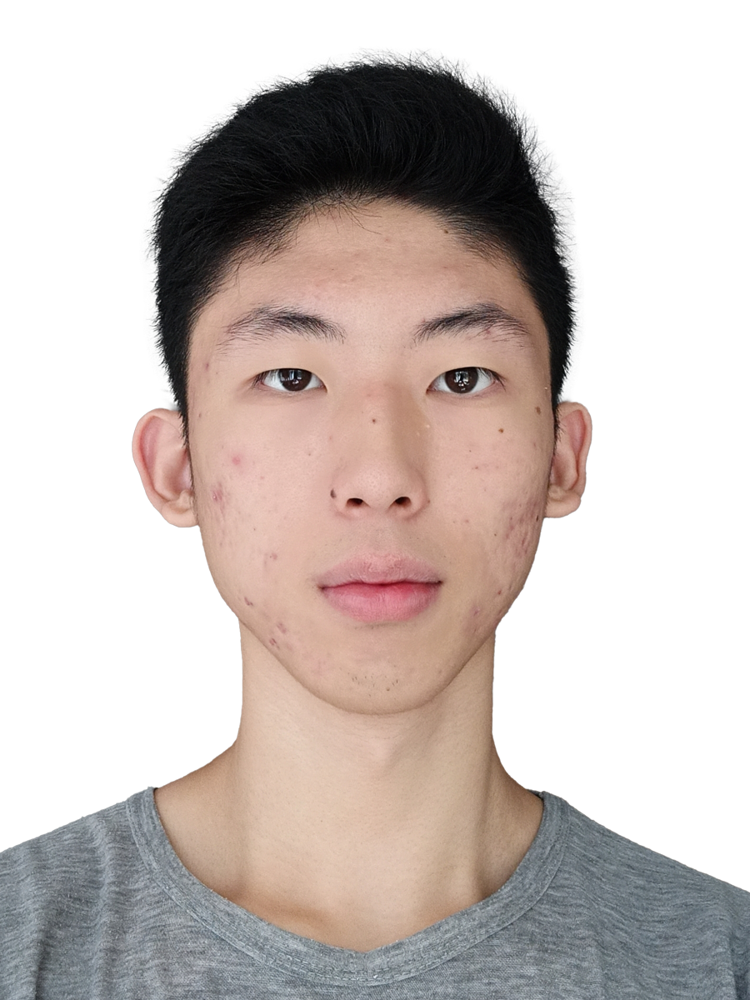

|
生日 2004/04/08
|
学历 本科 (2026届)
|
|
电话 17744404536
|
学校 首都师范大学
|
|
邮箱 LSDog@foxmail.com
|
现居 北京-石景山
|
2022-2026 首都师范大学 本科-人工智能(师范)
综合绩点：91.25
核心课程：Python程序设计(99)、C语言程序设计(99)、信息科学导论(95)、人工智能导论(94)、计算机软件基础(94)
2019-2022 北京外国语大学附属中学
2016-2019 北京市育英中学
2010-2016 北京市海淀区图强二小
作为一名 人工智能(师范) 专业的准毕业生，我不仅掌握了扎实的计算机专业知识，更系统学习了 教育心理学与教学法。性格开朗阳光，耐心细致，能够敏锐察觉学生的情绪变化与学习难点。
我是一个“有趣的老师”，主张“寓教于乐(Just for fun!)”，善于在教学中埋下彩蛋，让学生在快乐中掌握科技的力量。同时，我具备极强的包容性与适应力，能够尊重每一位学生的个性发展。在追求教学完美的同时，我也学会了如何在有限的时间内通过迭代优化来达成最佳的教学效果。
音乐制作与演奏、电子绘画、阅读教育类书籍、钻研前沿科技产品。这些爱好不仅丰富了我的生活，也成为了我教学素材的重要来源。